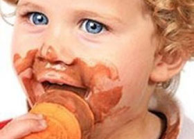

Merhaba güzel insanlar! Bu yaz sıcağında serinleten bir lezzete ne dersiniz? İşte en güzel dondurma tarifleriyle karşınızdayım. Ben kim miyim?
Dondurma Kraliçesi

Böğürtlenli Dondurma
Evet sevgili dostlar yediğimde ben kraliçeyi bile dağıtan bir lezzet olan böğürtlenli dondurma tarifimle karşınızdayım. Ağla!
Hazırlanma Süresi: Bu senin hızına bağlı bebek(hadi 40 dk diyelim de ağlama)
Pişirme Süresi: Ne kadar kaliteli dondurun var bana ondan haber ver( 40 dk diyelim de gönlün olsun)
Kaç Kişilik: Kaç kişi yaşıyorsunuz evde kız? konu komşuda gelecek mi?(ben kalabalık sevmem 2 kişi olsun)
Ağlatan ve Güldüren Böğürtlenli Dondurma Tarifi
MALZEMELER
1 litre tam yağlı süt (gitti 25 tl)
150 gram şeker (nasıl ayarlayacağım deme bim aktüelden ölçek takip et
300 gram krema (gelsin kaloriler)
5 gram sahlep
Bir fiske tuz (fiske ne be hahhaah)
Böğürtlen Sosu
500 g taze böğürtlen (bu mevsimde nereden bulurum?-iyi de banane-
50 g şeker
1/2 limonun suyu
Nasıl Yapılır?
Böğürtlen, şeker ve limon suyunu küçük bir tencereye alıp kısık ateşte 30 dakika koyulaşıncaya kadar pişirin. Oda sıcaklığına gelince 8 saat süreyle buzdolabında soğutun.
Geniş bir tencereye süt, şeker, tuz, sahlep ve kremayı koyarak kaynayıp koyulaşıncaya kadar yaklaşık 30-40 dakika süreyle karıştırın. (Sahlebin kalitesine göre bu süre daha kısa sürebilir.)
Tencereyi soğuk su dolu bir kap içine indirin ve karıştırarak soğutun.
ve kapaklı bir kaba alarak en az 8 saat süreyle buzdolabında soğutun.
Dolapta iyice soğumuş dondurmayı varsa dondurma makinesine boşaltın ve yaklaşık 30-40 dakika süreyle çalıştırın.
Dondurmayı makineden almadan önce son 2-3 dakikasında böğürtlenli sosu da makinenin içine boşaltarak birlikte iyice karıştırın.
Bu süre sonunda dondurmayı ağzı sıkı bir kaba alarak 5 saat süreyle buzlukta bekletin.Dondurma makineniz yoksa hazırladığımız dondurmayı ağzı sıkı bir kaba alarak 8 saat süreyle buzlukta bekletin.
Ancak her saat başı buzluktan alarak mikserle karıştırın ve bu işlemi dondurma sertleşinceye kadar 3-5 kez tekrarlayın.
Servis yapmadan 5 dakika önce dondurmayı buzluktan çıkarmanızı öneririz.